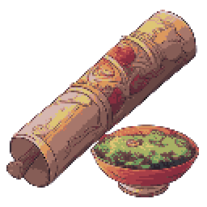

Палитра
Каждый цвет — именованная переменная --ct-*. Прямые hex-значения в интерфейсах запрещены: любая правка оттенка делается здесь и расходится по всем трём GUI. Ниже — роль и текущее место применения каждого токена.
Типографика
Семейство — системное (в Godot это fallback-шрифт темы), моноширинное — только для ID, чисел, счётчиков и технических значений. Кегли фиксированы шкалой: не вводить промежуточные размеры.
| Токен | Кегль | Где применяется | Образец |
|---|---|---|---|
| --ct-fs-h1 | 30px | название квеста на странице журнала | Пролог |
| --ct-fs-h2 | 25px | имя предмета в паспорте | Рацион |
| --ct-fs-title | 24px | заголовок панели (капс, слева в шапке) | ИНВЕНТАРЬ |
| --ct-fs-h3 | 19px | имя персонажа в карточке | Марао |
| --ct-fs-lead | 16px | текст записи журнала | Запись подошла к концу. |
| --ct-fs-body-l | 14px | кнопки, имена карточек, заголовки секций | Простая атака |
| --ct-fs-body | 13px | вкладки, поля, описания, HP-число | Поиск по инвентарю… |
| --ct-fs-body-s | 12px | статусы, футер, пустые состояния | Показано 4 из 9 |
| --ct-fs-small | 11px | счётчики, статы, стоимость, хинты | 1 ОД |
| --ct-fs-tiny | 10px | бейджи, ключи свойств | РЕСУРС |
| --ct-fs-micro | 9px | ID, подписи слотов, микро-теги | physics/attack |
Правило: капс — только для заголовков панели, секций и бейджей. Длинные названия (предметы, квесты, персонажи) — обычным регистром. Перенос длинного текста — WordSmart в Godot, в HTML — обычный перенос.
Геометрия и тени
Четыре радиуса по роли, одна толщина рамки 1px (2px — только подсветка drop-цели), тени — мягкие и тёмные.
| Токен | Значение | Носители |
|---|---|---|
| --ct-r-lg | 8px | окно панели, модальный диалог |
| --ct-r-md | 6px | карточка действия и персонажа, ячейка предмета, слот, страница книги |
| --ct-r-sm | 4px | кнопки, поля ввода, вкладки, печать, кнопка закрытия |
| --ct-r-xs | 3px | бейджи, чипы свойств, тег ячейки, малые вкладки пула |
| Токен | Значение | Где |
|---|---|---|
| --ct-shadow-window | 0 18px 50px rgba(0,0,0,.6) | окно панели, модальный диалог |
| --ct-shadow-card | 0 10px 26px rgba(0,0,0,.5) | выбранная ячейка, тултип, тост |
| --ct-shadow-paper | 0 24px 60px rgba(0,0,0,.85) | книга журнала |
| --ct-glow | 0 0 8px rgba(217,164,65,.55) | заполненный пипс ОД |
| фокус | 0 0 0 2px var(--ct-accent-soft) | поля ввода; у кнопок фокус-рамка отключена |
Каркас панели
Все три интерфейса — модальные окна поверх затемнения и собираются по одной схеме: шапка с заголовком слева и закрытием справа, разделитель, тело, футер. Это главное, что унифицируется: заголовки и закрытие встают на свои места, композиция и функции панелей не меняются.
| Зона | Правило |
|---|---|
| Заголовок | слева в шапке, 24px, капс, --ct-ink-bright; в журнале добавляется «ЖУРНАЛ», в действиях был 22px → 24px |
| Закрытие | справа в шапке, кнопка 38×38 с глифом «✕», обычное — контур --ct-line, под курсором — красная рамка и заливка |
| Разделитель | 1px --ct-line во всю ширину под шапкой |
| Тело | отступ 24px; двухколоночные панели имеют правую колонку --ct-side с отступом 16px и левой границей |
| Футер | только служебное: статус, «Сброс», счётчики; закрытие здесь больше не дублируется |

рецепт ×4
×4 ×10
×10 ×6
×6Окно панели: --ct-r-lg, фон --ct-surface-0, рамка --ct-line, тень --ct-shadow-window. Заголовок — единственный капс-текст в шапке, справа — счётчики и закрытие.
Кнопки
Четыре роли: основная (золотая), вторичная (тёмная), опасная и недоступная. Размер обычный и малый, плюс иконочная кнопка закрытия и кнопка-иконка тулбара. Радиус 4px, рамка 1px, паддинг 18/11 (малая — 12/8).
| Вариант | Обычное | Под курсором | Текст |
|---|---|---|---|
| .ct-btn--primary | фон #241f12, рамка accent 45% | фон #2f2816, рамка accent 75% | accent-bright → accent-hover |
| .ct-btn | фон --ct-surface-3, рамка --ct-line | фон #232633, рамка accent 45% | --ct-body → --ct-ink-bright |
| .ct-btn--danger | как вторичная | фон danger 15%, рамка --ct-danger | --ct-danger-text |
| :disabled | фон #15161d, рамка --ct-line-disabled | — | --ct-faint |
Единое решение: hover основной кнопки — #2f2816 (у панели действий было #38301c). Опасная кнопка везде использует красную заливку 15%, как кнопка закрытия.
Вкладки и фильтры
Два вида: обычные вкладки-фильтры (инвентарь и пул действий) и книжные закладки-ленты журнала. У обоих активное состояние — золотое.
| Состояние | Фильтр | Закладка |
|---|---|---|
| обычное | прозрачный, текст --ct-muted | фон #2a241b, рамка --ct-paper-line, текст #d9cdb2 |
| hover | фон white 4%, текст --ct-ink | фон #38301f, текст --ct-ink-bright |
| активное | фон accent 8%, рамка accent 45%, текст accent-bright | фон --ct-accent, текст #1a1409 |
Единое решение: рамка активной вкладки — accent 45% и радиус 4px у обоих видов (в пуле действий было 50% и 3px). Счётчик — моно-плашка радиуса 9px.
Поля и слайдер
Поле поиска, выпадающий список и ползунок количества. Все — на поверхности --ct-well, рамка 1px, фокус — золотая рамка 45% с мягким кольцом.
| Элемент | Спецификация |
|---|---|
| .ct-input | фон --ct-well, рамка --ct-line, радиус 4, паддинг 12/9, placeholder --ct-faint, caret --ct-accent |
| .ct-input:focus | рамка accent 45% + кольцо accent 8% |
| .ct-select | как поле; выпадающий список — фон --ct-surface-2, радиус 6, hover-строка accent 12% |
| .ct-range | трек --ct-line-disabled, заливка --ct-accent, бегунок — акцентный |
| .ct-well | фон --ct-surface-2, рамка --ct-line, радиус 6, паддинг 12 — блок «выбросить количество» |
Бейджи и чипы
Один компонент бейджа на все типы: заливка цветом типа 9%, рамка 50%, текст цветом типа, капс 10px, радиус 3px. Отдельно — чипы свойств и стат-чипы персонажа.
Правило: цвет бейджа всегда равен цвету акцента карточки/ячейки; не смешивать тип «еда» с зелёным успеха в одном контексте. Квестовый бейдж совпадает с основным акцентом — это осознанное исключение из семантики типов.
Ячейки и карточки
Основные носители контента: ячейка предмета, карточка действия (полная и компактная), слот действия, карточка персонажа, строка выбора цели. Состояния — обычное, под курсором, выбранное, недоступное.
×4×10×6| Состояние | Рамка | Фон |
|---|---|---|
| обычное | --ct-line-soft | --ct-surface-1 |
| hover | --ct-line-strong | --ct-surface-hover, сдвиг вверх 2px |
| выбранное | --ct-accent + свечение 50% | --ct-surface-selected |
| недоступное | как обычное | иконка opacity .38 + grayscale |


Полная карточка — 86px, компактная (пул) — 60px. Слева акцент-полоса 4px цвета типа, иконка 52px, имя 14px, ID 9px моно, ниже — бейджи, ещё ниже (только полная) — чипы свойств. Перетаскивание — прозрачность 55%.
| Состояние | Спецификация |
|---|---|
| пустой | фон --ct-surface-0, рамка --ct-line-faint, подпись «СЛОТ N» 9px --ct-faint |
| занятый | фон --ct-surface-1, рамка --ct-line-card |
| drop-цель | фон #1a2019, рамка 2px --ct-type-passive (зелёная подсветка) |

Карточка персонажа: фон --ct-surface-raised, рамка --ct-line, радиус 6px (был 8px — выровнен по шкале карточек), паддинг 14px. Портрет — колодец 58×58 радиуса 6px. Статы — стат-чипы.
Журнал
Книжный разворот сохраняет материал «бумага», но подчиняется общим правилам: шапка с заголовком и закрытием, единый акцент, единая шкала текста, те же радиусы и закладки-вкладки.
Строка квеста: маркер-ромб 9px, выбранная — заливка accent 10% и левая рамка 2px, завершённая — приглушённый маркер и зачёркнутый текст. Записи: пройденные — зачёркнуты --ct-faint, текущая — золотой буллет и --ct-ink-bright, будущие не показываются.
Индикаторы
Пипсы очков действия, полоса здоровья, бейдж перезарядки и пустые состояния. Никаких других прогресс-баров и цветов не вводится.
| Элемент | Спецификация |
|---|---|
| .ct-pip.is-on | 11px, фон --ct-accent-bright, рамка --ct-accent, свечение --ct-glow |
| .ct-pip | 11px, фон --ct-line-disabled, рамка --ct-line-faint |
| .ct-hp | трек 96×7 радиуса 4, заливка --ct-hp-ok, ниже 40% — --ct-hp-low |
| .ct-empty | текст 14px --ct-faint по центру, «Инвентарь пуст» / «Нет квестов» / «Пул пуст» |
Сообщения и оверлеи
Инлайн-сообщения паспорта, тултипы карточек, HUD-уведомления, диалог подтверждения и единый тёмный скроллбар.
Трек прозрачный, бегунок #252734 радиусом 5px, по краям — 2px отступ. Под курсором бегунок светлеет до --ct-line-strong. Один стиль для инвентаря, пула действий и журнала.
Раньше скроллбары были дефолтными у Godot и выбивались из тёмной палитры — теперь это часть кита.
Прокрутите, чтобы увидеть бегунок.
Конец.
| Элемент | Спецификация |
|---|---|
| .ct-message--ok | текст --ct-ok, рамка success 50%, заливка 10% |
| .ct-message--err | текст --ct-danger-text, рамка danger 55%, заливка 10% |
| .ct-tooltip | фон rgba(16,17,24,.97), рамка --ct-line, радиус 4, тень --ct-shadow-card |
| .ct-toast | фон rgba(33,33,33,.8), рамка --ct-line, радиус 6; иконка accent-bright |
| .ct-modal | окно поверх затемнения, как обычная панель: --ct-r-lg, --ct-shadow-window |
| .ct-scroll | ширина 9px, бегунок #252734, hover --ct-line-strong, радиус 5 |
Карта элементов и стилей
Все элементы, встречающиеся в трёх GUI, и то, во что они приводятся. «Где задано сейчас» — исходное место в коде до унификации; после внедрения кита источником становится tokens.css.
| Элемент | Инвентарь | Журнал | Действия | Класс кита | Где задано сейчас |
|---|---|---|---|---|---|
| Затемнение фона | да | да | да | .ct-backdrop | InventoryPanelBehaviour · BackdropColor; QuestJournalBehaviour · ColorRect; CharacterPanelBehaviour · Backdrop |
| Окно панели | да | книга | да | .ct-window / .ct-window--paper | PanelColor #0e0f15, радиус 8; журнал — PaperBottom #15110d |
| Заголовок панели | «Инвентарь» 24px | нет | «Действия персонажей» 22px | .ct-window__title | InventoryPanelBehaviour; CharacterPanelBehaviour · header |
| Кнопка закрытия | ✕ 38×38 справа | × 40×40 над книгой | текстовая «Закрыть» в футере | .ct-icon-btn | InventoryPanelBehaviour · close; QuestJournalBehaviour · close; CharacterPanelBehaviour · footer close |
| Горизонтальный разделитель | да | нет | да | .ct-rule / .ct-window__rule | Panel 1px #2a2c38 |
| Вкладки-фильтры | 5 шт. | нет | 6 шт. | .ct-tab / .ct-tab--sm | InventoryPanelBehaviour · tabs; ActionPoolBehaviour · tabs |
| Закладки-ленты | нет | 2 шт. | нет | .ct-ribbon | QuestJournalBehaviour · ribbons |
| Поиск | да | нет | да | .ct-input--search | InventoryPanelBehaviour; ActionPoolBehaviour · search |
| Сортировка / список | да | нет | нет | .ct-select | InventoryPanelBehaviour · OptionButton + PopupMenu |
| Ползунок количества | да | нет | нет | .ct-range | InventoryPanelBehaviour · HSlider |
| Ячейка предмета | да | нет | нет | .ct-slot | InventoryItemBehaviour · три состояния рамки |
| Точка типа предмета | да | нет | нет | .ct-slot__dot | InventoryItemUi · AccentColor |
| Тег действия в ячейке | да | нет | нет | .ct-slot__tag | InventoryItemBehaviour · tag «рецепт/цель/пить/use» |
| Счётчик стака | «×N» | нет | нет | .ct-slot__stack | InventoryItemBehaviour · stack label |
| Правая колонка панели | паспорт 430px | нет | пул 420px | .ct-side | PanelContainer · левая рамка, фон black 20% |
| Бейдж типа | да | печати | легенда и карточки | .ct-badge--* | InventoryPanelBehaviour · badges; ActionCharacterUi · MakeBadge; QuestJournalBehaviour · seals |
| Строка свойства | да | нет | чипы на карточке | .ct-chip | InventoryPanelBehaviour · PropertyData; ActionCharacterUi · props |
| Стат-чип персонажа | нет | нет | HP/ОД/АТК/ЗАЩ | .ct-stat | CharacterCardBehaviour · stats |
| Основная кнопка | «Использовать» | нет | «Закрыть» | .ct-btn--primary | InventoryPanelBehaviour · MakeButtonStyle; CharacterPanelBehaviour · footer |
| Вторичная кнопка | «Выбросить», −/+/Все | нет | «Сброс» | .ct-btn | InventoryPanelBehaviour; CharacterPanelBehaviour |
| Опасная кнопка | выброс | нет | сброс | .ct-btn--danger | Danger #a63d40 |
| Недоступная кнопка | нет действия | нет | нет | :disabled | InventoryPanelBehaviour · disabled style |
| Панель количества | да | нет | нет | .ct-well | InventoryPanelBehaviour · drop panel |
| Выбор цели | да | нет | нет | .ct-target / .ct-hp | CharacterTargetPanel |
| Полоса здоровья | у цели | нет | текстом в чипе | .ct-hp | CharacterTargetPanel · ProgressBar; CharacterCardBehaviour · HP value |
| Пипсы ОД | да | нет | нет | .ct-pips / .ct-pip | InventoryPanelBehaviour · AP pips |
| Карточка персонажа | нет | нет | да | .ct-character | CharacterCardBehaviour |
| Слот действия | нет | нет | 3 на персонажа | .ct-action-slot | ActionSlotBehaviour · empty/filled/highlight |
| Карточка действия | нет | нет | полная и компактная | .ct-action-card | ActionCardBehaviour · 86/60, акцент-полоса |
| Строка квеста | нет | да | нет | .ct-quest | QuestJournalBehaviour · quest row |
| Запись этапа | нет | да | нет | .ct-entry | QuestJournalBehaviour · RichTextLabel BBCode |
| Заголовок секции | нет | 3 шт. | нет | .ct-section-title | QuestJournalBehaviour · «ОГЛАВЛЕНИЕ/ЗАПИСЬ/ПЕЧАТИ» |
| Разделитель с ромбом | нет | да | нет | .ct-divider | QuestJournalBehaviour · diamond |
| Печать-метка | нет | да | нет | .ct-seal | QuestJournalBehaviour · seals |
| Пустое состояние | да | да | да | .ct-empty | InventoryPanelBehaviour; QuestJournalBehaviour; ActionPoolBehaviour |
| Инлайн-сообщение | ok / error | нет | нет | .ct-message--* | InventoryPanelBehaviour · message panel |
| HUD-уведомление | нет | новая запись | нет | .ct-toast | NotificationPanel; ModsMenu toast |
| Тултип | нет | у закрытия | у карточек | .ct-tooltip | ActionCardBehaviour · TooltipText; дефолт Godot |
| Диалог подтверждения | нет | нет | сброс | .ct-modal | CharacterPanelBehaviour · ConfirmationDialog |
| Скроллбар | да | да | да | .ct-scroll | дефолт Godot во всех трёх панелях |
| Кнопка-иконка тулбара | сумка | журнал | карты | .ct-toolbar-btn | ToolBox · TextureButton 60×60 |
Правила и решения унификации
Стиль закрепляется двумя файлами: tokens.css — значения, ui-kit.css — компоненты. Эта страница — их живая демонстрация; любое расхождение с ней считается ошибкой стиля.
Можно
- брать цвет только как
var(--ct-*); - заголовок — слева в шапке, закрытие — справа;
- радиус по роли: 8 окно, 6 карточка, 4 кнопка, 3 бейдж;
- моноширинный шрифт для ID, чисел и счётчиков;
- одно активное состояние — золотое, одно опасное — красное.
Нельзя
- собственные hex-значения в панелях и сценах;
- второй оттенок золота «рядом» с основным;
- закрытие в футере или в случайном углу;
- радиусы и кегли вне шкалы;
- капс для названий предметов, квестов и персонажей;
- дефолтные скроллбары и тултипы Godot.
| Решение | Было | Стало |
|---|---|---|
| единый акцент | журнал #c79a4b, панели #d9a441 | #d9a441 везде |
| единый текст | #f2e8cf / #d8cdb4 / #7d7462 / #59513f в журнале | ink-bright / ink / muted / faint |
| заголовок панели | инвентарь 24, действия 22, журнал без заголовка | 24px, капс, слева; «ЖУРНАЛ» добавлен |
| закрытие | 38×38 ✕, 40×40 ×, текстовая кнопка | 38×38 ✕ справа в шапке у всех |
| затемнение | 0.88 / 0.9 / 0.9 | --ct-backdrop 0.9 |
| активная вкладка | рамка 45% (инвентарь), 50% (пул) | accent 45%, радиус 4 |
| primary под курсором | #2f2816 / #38301c | #2f2816 |
| карточка персонажа | радиус 8 | радиус 6, как у карточек |
| скроллбар и тултип | дефолт Godot | тёмные, из кита |
| материал журнала | отдельная коричневая палитра | тёплая поверхность + общие текст и акцент |